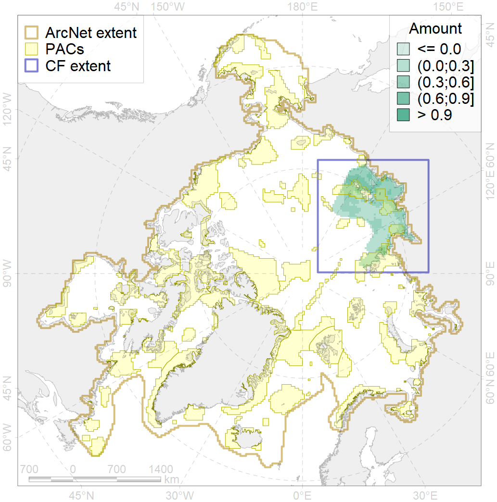
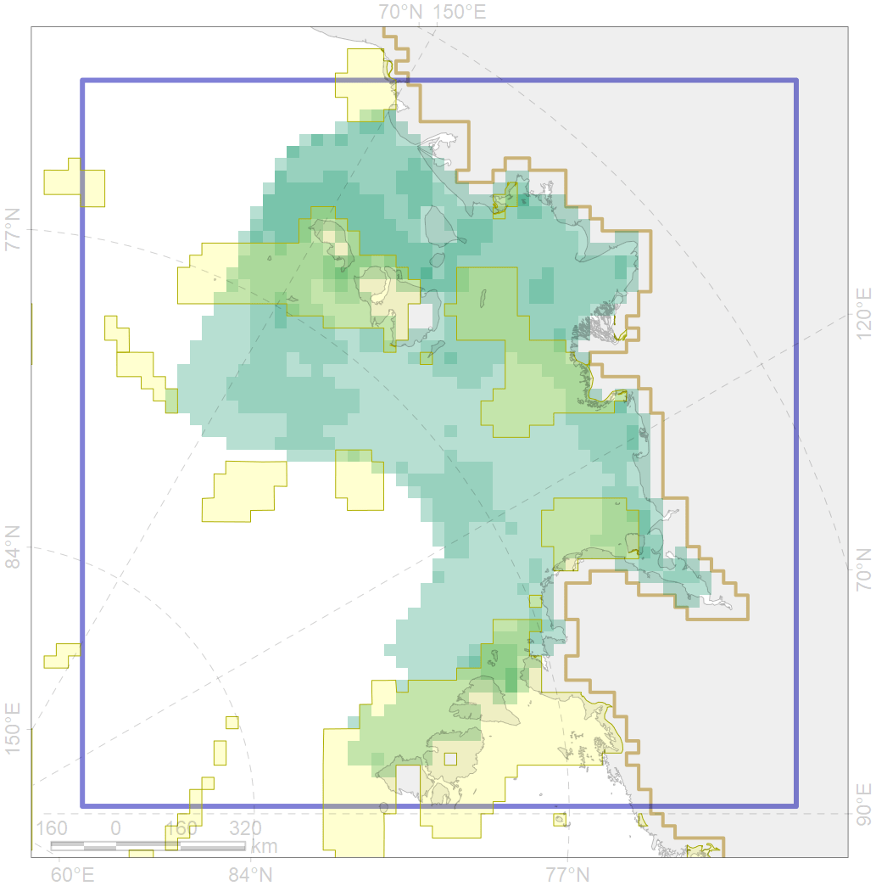

3039

| CF code | 3039 |
| CF name | Marginal Ice Zone distribution in July in the Laptev Sea LME |
| Time Period | 1979 - 2017, adopted for recent changes |
| Source(s) | Lavielle M. 1999. Detection of multiple changes in a sequence of dependent variables. Stochastic Processes and their Applications, 83(1): 79–102. doi:10.1016/S0304-4149(99)00023-X. |
| Seasonality | July |
| Depth Horizon | 0 |
| Methodology | Strong C, Rigor IG. 2013. Arctic marginal ice zone trending wider in summer and narrower in winter. Geophysical Research Letters, 40(18): 4864–4868. doi:10.1002/grl.50928. Lavielle M. 1999. Detection of multiple changes in a sequence of dependent variables. Stochastic Processes and their Applications, 83(1): 79–102. doi:10.1016/S0304-4149(99)00023-X. |
| Use Restrictions | Joined terms of data licenses, copyrights, restrictions, terms of use, disclaimers, etc. No additional terms from data contributor. |
| Author Name | Nikita Platonov |
| Notes | |
| Scenario’s Target | 0.24 |
| Target Achievement | 0.280 (Scenario: 116.5%) |
| PAC | Share of the Total Amount within the PAC | Share of the Target Achievement for the ArcNet | PAC’s Contribution to the Target Achievement |
|---|---|---|---|
| 10 | 0.1% | 0.3% | 0.2% |
| 11 | 9.6%9.6% | 39.6%39.7% | 34.0%34.0% |
| 12 | 8.7%8.8% | 31.7%32.0% | 27.2%27.4% |
| 13 | 2.6%2.6% | 10.2%10.2% | 8.7%8.7% |
| 14 | 5.1%5.1% | 18.7%18.7% | 16.0%16.0% |
| 56 | 0.0%0.0% | 0.0%0.0% | 0.0%0.0% |
| 83 | 0.2%0.3% | 0.4%0.4% | 0.3%0.4% |
| inner | 26.3%26.5% | 100.8%101.2% | 86.5%86.8% |
| outer | 73.7%75.7% | 15.7%22.0% | 13.5%18.9% |
| † supplement values are for area consistence whereas principal values are for Accenter compatible gridded stats |